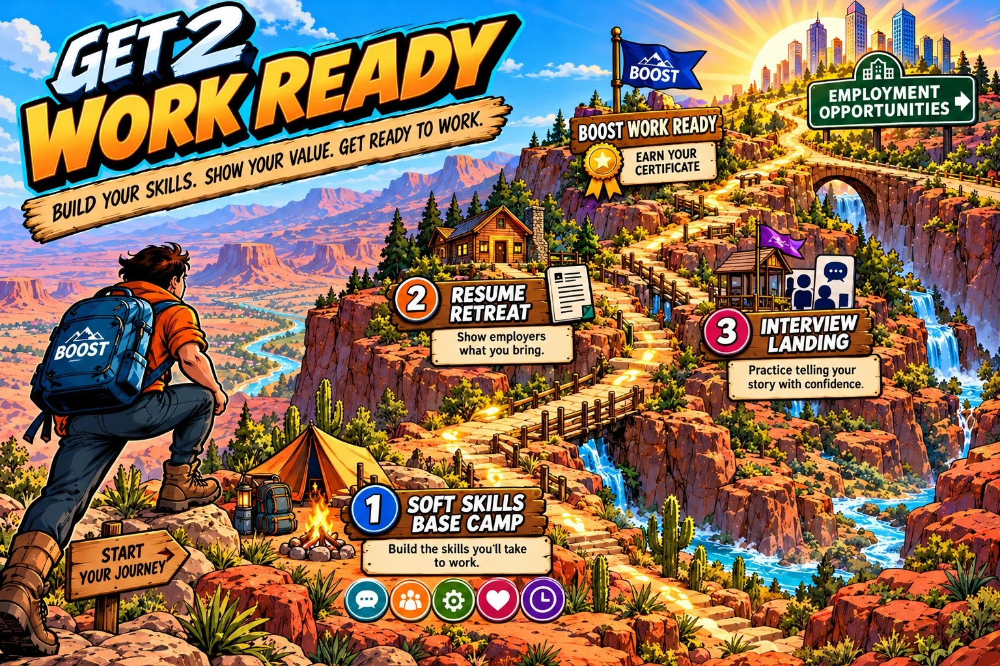

YOUR READY 2 WORK JOURNEY
Build your skills. Show your value. Get ready to work.
Move through three work-readiness areas. Your decisions build a six-skill mastery profile that follows you through the experience and onto your BOOST Work Ready Certificate.
FINAL MILESTONE
BOOST Work Ready Certificate
Complete the published Ready 2 Work requirements to unlock an employer-facing certificate with your demonstrated soft-skill mastery profile.